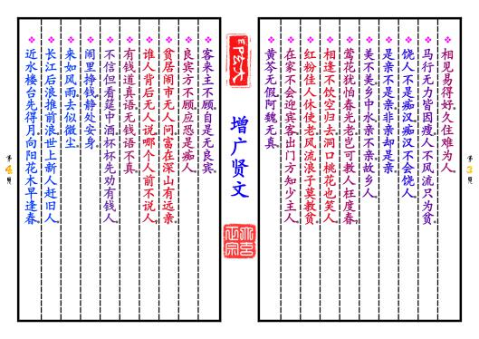
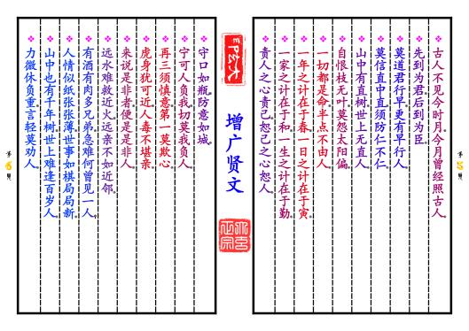
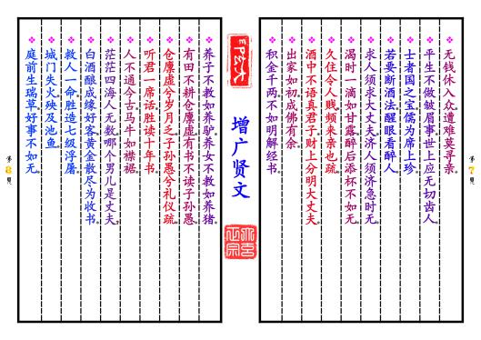
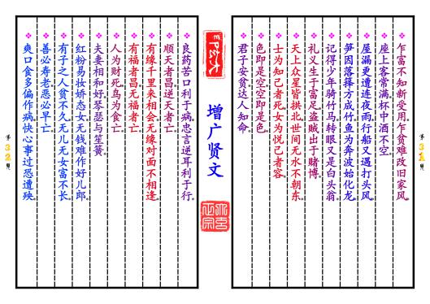
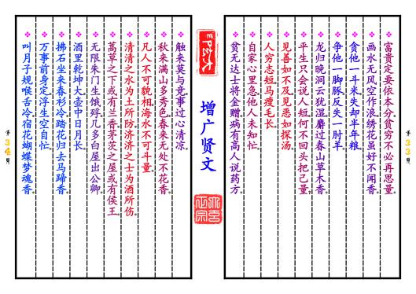
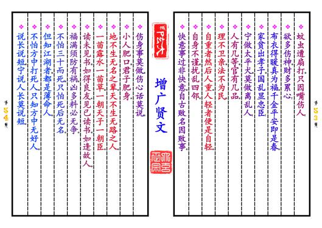
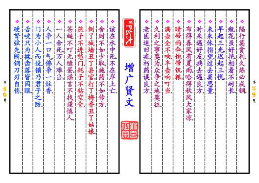

-
第【3-4】页 ❖相见易得好，久住难为人。❖马行无力皆因瘦，人不风流只为贫。❖饶人不是痴汉，痴汉不会饶人。❖是亲不是亲，非亲却是亲。❖美不美，乡中水；亲不亲，故乡人。❖莺花犹怕春光老，岂可教人枉度春？❖相逢不饮空归去，洞口桃花也笑人。❖红粉佳人休使老，风流浪子莫教贫。❖在家不会迎宾客，出门方知少主人。❖黄芩无假，阿魏无真。❖客来主不顾，自是无良宾。❖良宾方不顾，应恐是痴人。❖贫居闹市无人问，富在深山有远亲。❖谁人背后无人说，哪个人前不说人？❖有钱道真语，无钱语不真。❖不信但看筵中酒，杯杯先劝有钱人。❖闹里挣钱，静处安身。❖来如风雨，去似微尘。❖长江后浪推前浪，世上新人赶旧人。❖近水楼台先得月，向阳花木早逢春。预览书籍 全文配置
-
第【5-6】页 
-
第【7-8】页 ❖无钱休入众，遭难莫寻亲。❖平生不做皱眉事，世上应无切齿人。❖士者国之宝，儒为席上珍。❖若要断酒法，醒眼看醉人。❖求人须求大丈夫，济人须济急时无。❖渴时一滴如甘露，醉后添杯不如无。❖久住令人贱，频来亲也疏。❖酒中不语真君子，财上分明大丈夫。❖出家如初，成佛有余。❖积金千两，不如明解经书。❖养子不教如养驴，养女不教如养猪。❖有田不耕仓廪虚，有书不读子孙愚。❖仓廪虚兮岁月乏，子孙愚兮礼仪疏。❖听君一席话，胜读十年书。❖人不通今古，马牛如襟裾。❖茫茫四海人无数，哪个男儿是丈夫？❖白酒酿成缘好客，黄金散尽为收书。❖救人一命，胜造七级浮屠。❖城门失火，殃及池鱼。❖庭前生瑞草，好事不如无。预览书籍 全文配置
-
第【13-14】页
 ❖人无远虑，必有近忧。❖知我者谓我心忧，不知我者谓我何求？❖晴天不肯去，直待雨淋头。❖成事莫说，覆水难收。❖是非只为多开口，烦恼皆因强出头。❖忍得一时之气，免得百日之忧。❖近来学得乌龟法，得缩头时且缩头。❖惧法朝朝乐，欺公日日忧。❖人生一世，草长一春。❖黑发不知勤学早，转眼便是白头翁。❖月过十五光明少，人到中年万事休。❖儿孙自有儿孙福，莫为儿孙做马牛。❖人生不满百，常怀千岁忧。❖今朝有酒今朝醉，明日愁来明日忧。❖路逢险处须回避，事到临头不自由。❖人贫不语，水平不流。❖一家养女百家求，一马不行百马忧。❖有花方酌酒，无月不登楼。❖三杯通大道，一醉解千愁。❖深山毕竟藏猛虎，大海终须纳细流。预览书籍 全文配置
❖人无远虑，必有近忧。❖知我者谓我心忧，不知我者谓我何求？❖晴天不肯去，直待雨淋头。❖成事莫说，覆水难收。❖是非只为多开口，烦恼皆因强出头。❖忍得一时之气，免得百日之忧。❖近来学得乌龟法，得缩头时且缩头。❖惧法朝朝乐，欺公日日忧。❖人生一世，草长一春。❖黑发不知勤学早，转眼便是白头翁。❖月过十五光明少，人到中年万事休。❖儿孙自有儿孙福，莫为儿孙做马牛。❖人生不满百，常怀千岁忧。❖今朝有酒今朝醉，明日愁来明日忧。❖路逢险处须回避，事到临头不自由。❖人贫不语，水平不流。❖一家养女百家求，一马不行百马忧。❖有花方酌酒，无月不登楼。❖三杯通大道，一醉解千愁。❖深山毕竟藏猛虎，大海终须纳细流。预览书籍 全文配置 -
第【15-16】页❖惜花须检点，爱月不梳头。❖大抵选她肌骨好，不搽红粉也风流。❖受恩深处宜先退，得意浓时便可休。❖莫待是非来入耳，从前恩爱反为仇。❖留得五湖明月在，不愁无处下金钩。❖休别有鱼处，莫恋浅滩头。❖去时终须去，再三留不住。❖忍一句，息一怒，饶一着，退一步。❖三十不豪，四十不富，五十将来寻死路。❖生不认魂，死不认尸。❖一寸光阴一寸金，寸金难买寸光阴。❖父母恩深终有别，夫妻义重也分离。❖人生似鸟同林宿，大难来时各自飞。❖人善被人欺，马善被人骑。❖人无横财不富，马无夜草不肥。❖人恶人怕天不怕，人善人欺天不欺。❖善恶到头终有报，只盼来早与来迟。❖黄河尚有澄清日，岂能人无得运时？❖得宠思辱，居安思危。❖念念有如临敌日，心心常似过桥时。预览书籍 全文配置
-
第【31-32】页 ❖乍富不知新受用，乍贫难改旧家风。❖座上客常满，杯中酒不空。❖屋漏更遭连夜雨，行船又遇打头风。❖笋因落箨方成竹，鱼为奔波始化龙。❖记得少年骑竹马，转眼又是白头翁。❖礼义生于富足，盗贼出于赌博。❖天上众星皆拱北，世间无水不朝东。❖士为知己者死，女为悦己者容。❖色即是空，空即是色。❖君子安贫，达人知命。❖良药苦口利于病，忠言逆耳利于行。❖顺天者昌，逆天者亡。❖有缘千里来相会，无缘对面不相逢。❖有福者昌，无福者亡。❖人为财死，鸟为食亡。❖夫妻相和好，琴瑟与笙簧。❖红粉易妆娇态女，无钱难作好儿郎。❖有子之人贫不久，无儿无女富不长。❖善必寿老，恶必早亡。❖爽口食多偏作病，快心事过恐遭殃。预览书籍 全文配置
-
第【33-34】页 ❖富贵定要依本分，贫穷不必再思量。❖画水无风空作浪，绣花虽好不闻香。❖贪他一斗米，失却半年粮。❖争他一脚豚，反失一肘羊。❖龙归晚洞云犹湿，麝过春山草木香。❖平生只会说人短，何不回头把己量？❖见善如不及，见恶如探汤。❖人穷志短，马瘦毛长。❖自家心里急，他人未知忙。❖贫无达士将金赠，病有高人说药方。❖触来莫与竞，事过心清凉。❖秋来满山多秀色，春来无处不花香。❖凡人不可貌相，海水不可斗量。❖清清之水为土所防，济济之士为酒所伤。❖蒿草之下或有兰香，茅茨之屋或有侯王。❖无限朱门生饿殍，几多白屋出公卿。❖酒里乾坤大，壶中日月长。❖拂石坐来春衫冷，踏花归去马蹄香。❖万事前身定，浮生空自忙。❖叫月子规喉舌冷，宿花蝴蝶梦魂香。预览书籍 全文配置
-
第【39-40】页

-
第【41-42】页

-
第【43-44】页❖作善鬼神钦，作恶遭天遣。❖积钱积谷不如积德，买田买地不如买书。❖一日春工十日粮，十日春工半年粮。❖疏懒人没吃，勤俭粮满仓。❖人亲财不亲，财利要分清。❖十分伶俐使七分，常留三分与儿孙，❖若要十分都使尽，远在儿孙近在身。❖君子乐得做君子，小人枉自做小人。❖好学者则庶民之子为公卿，❖不好学者则公卿之子为庶民。❖惜钱莫教子，护短莫从师。❖记得旧文章，便是新举子。❖人在家中坐，祸从天上落。❖但求心无愧，不怕有后灾。❖只有和气去迎人，哪有相打得太平。❖忠厚自有忠厚报，豪强一定受官刑。❖人到公门正好修，留些阴德在后头。❖为人何必争高下，一旦无命万事休。❖山高不算高，人心比天高。❖白水变酒卖，还嫌猪无糟。预览书籍 全文配置
-
第【53-54】页 
-
第【59-60】页 